Không gian xem an toàn cho bé, do ba mẹ tự tay chọn
Thêm kênh và playlist con yêu thích từ YouTube hoặc tự tải video của gia đình lên. Không thuật toán tự trôi, không quảng cáo, không YouTube Shorts.
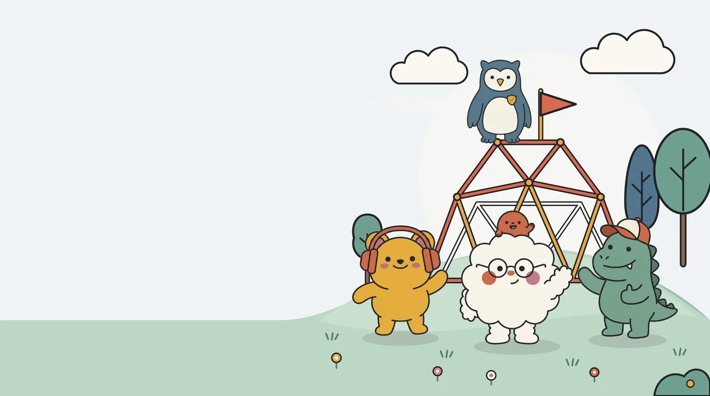
An tâm trao điều khiển TV cho con mỗi ngày
Thay vì nơm nớp lo thuật toán đẩy con sang những clip nhảm nhí hay quảng cáo ồn ào, ba mẹ chỉ cần chọn sẵn các kênh hoạt hình, kể chuyện và khám phá lành mạnh một lần duy nhất.
Ba mẹ chọn một lần, con xem lành mạnh mỗi ngày
Mọi tính năng của Kippin đều xoay quanh một lời hứa giản dị: chỉ những gì ba mẹ duyệt mới xuất hiện trên màn hình của con.
100% kênh và video do chính ba mẹ chọn
Dán link kênh hoặc playlist từ YouTube mà con yêu thích, hoặc tự tải những video kỷ niệm của gia đình lên. Không có luồng gợi ý tự động từ người lạ — con chỉ dạo chơi trong khu vườn an toàn ba mẹ đã trồng.
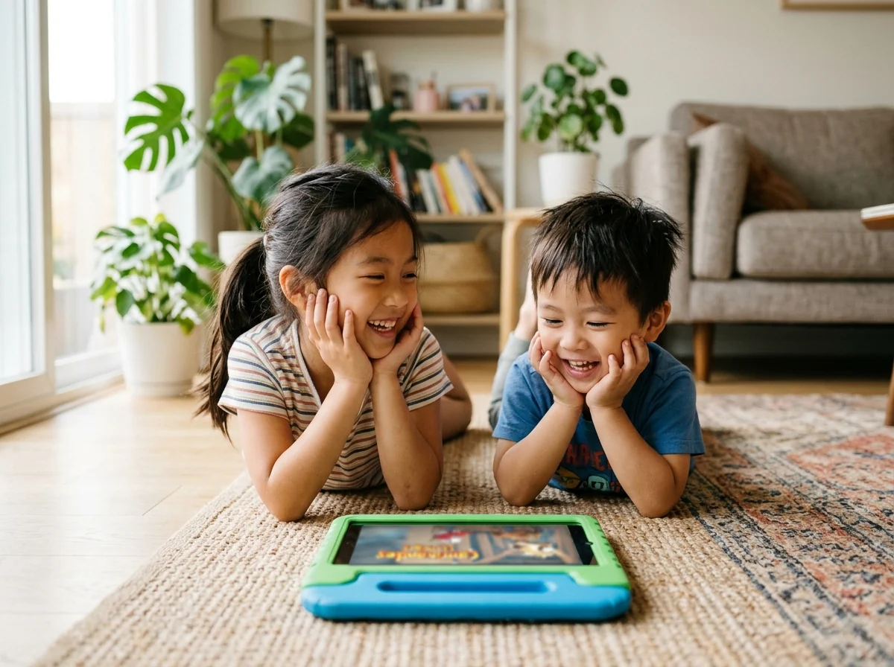
Tạm biệt YouTube Shorts và quảng cáo xen ngang
Kippin tự động gạt bỏ hoàn toàn các video ngắn dưới 60 giây gây xao nhãng, tắt sạch quảng cáo chen ngang và khóa mọi đường link nhảy ra ngoài ứng dụng để giữ trọn sự tập trung tự nhiên của trẻ.
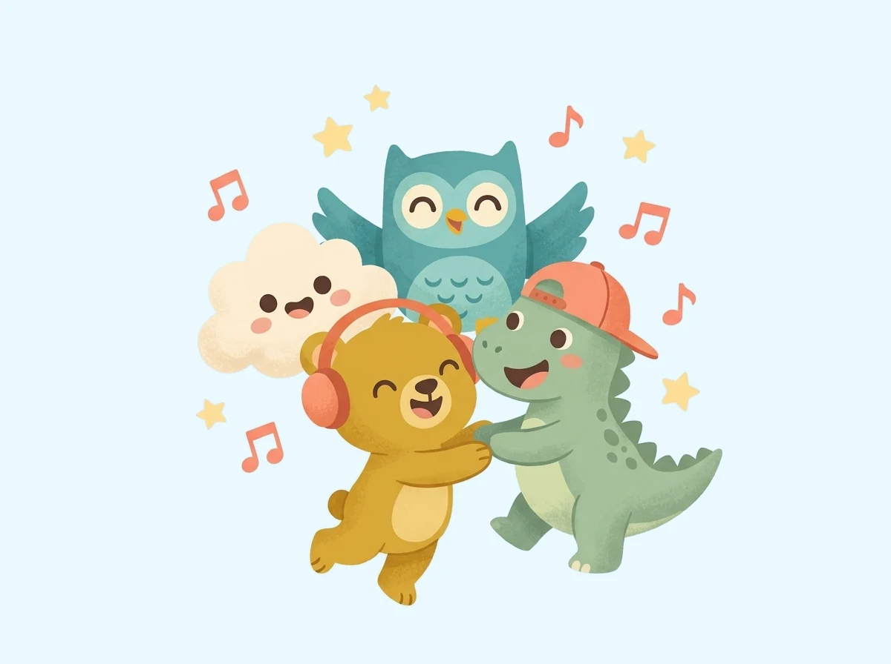
Xem trọn vẹn từng câu chuyện theo đúng thứ tự tập
Khi con đang say sưa theo dõi một bộ phim hoạt hình dài kỳ hay chuỗi bài học vẽ, Kippin tự động phát tập tiếp theo ngay trong bộ đó — không bao giờ nhảy cóc sang video nhảm nhí của kênh lạ.
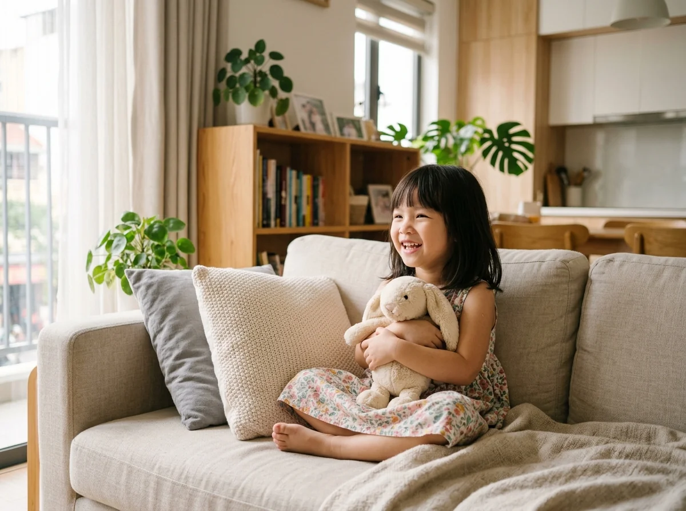
Mở lên TV phòng khách chỉ với 6 chữ số
Hoạt động mượt mà trên Sony, TCL, Xiaomi, Casper và Chromecast with Google TV. Ba mẹ chỉ cần nhập mã 6 ký tự trên điện thoại là kết nối xong — không cần đăng nhập tài khoản Google của người lớn lên TV.
Xem hướng dẫn cài đặt Smart TV →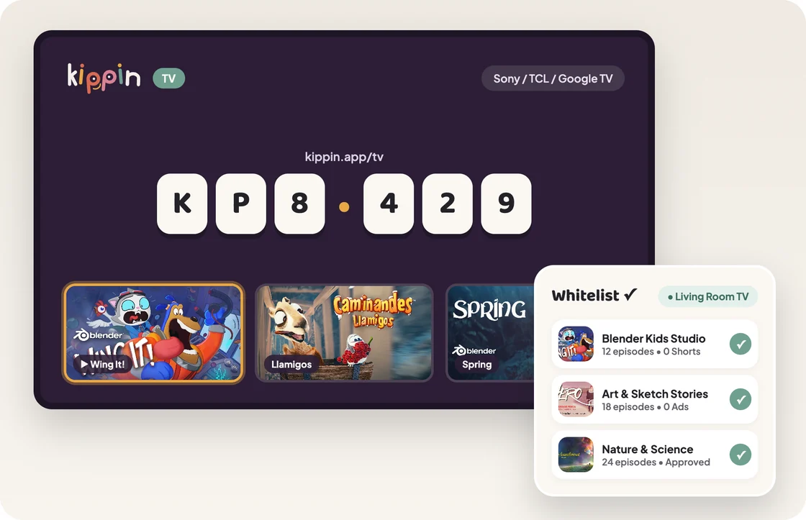
Bên trong ứng dụng Kippin
Giao diện trong trẻo, không nút bấm rối mắt cho bé — quản lý kênh gọn nhẹ cho ba mẹ trên cả Web, Tablet và Smart TV.
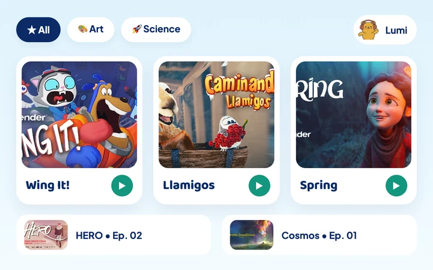
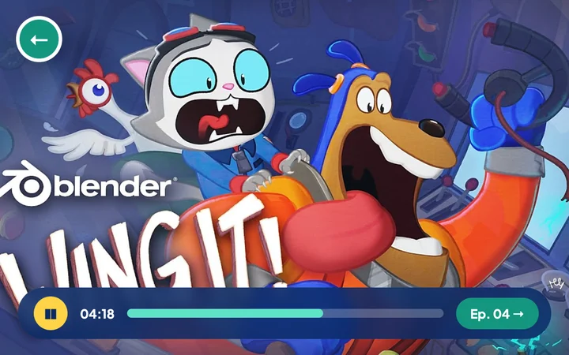
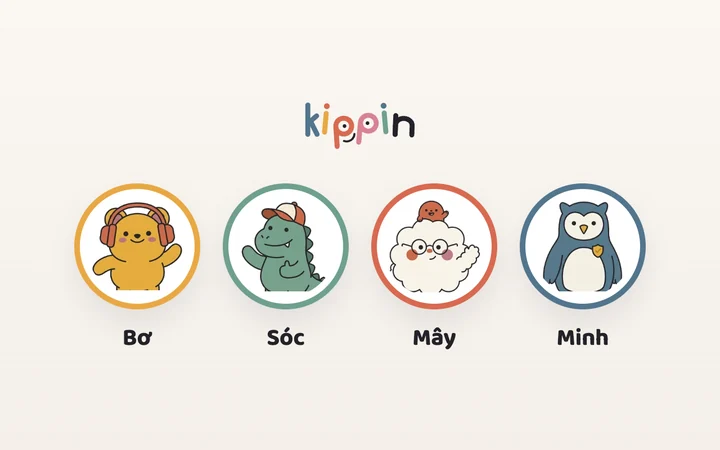
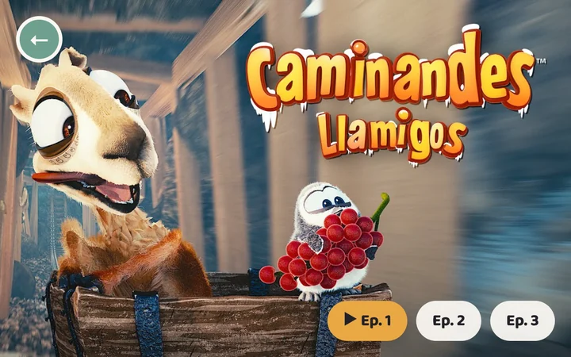
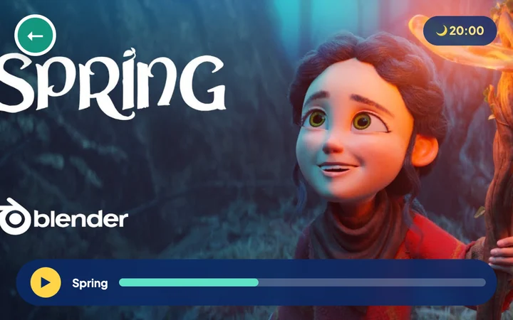
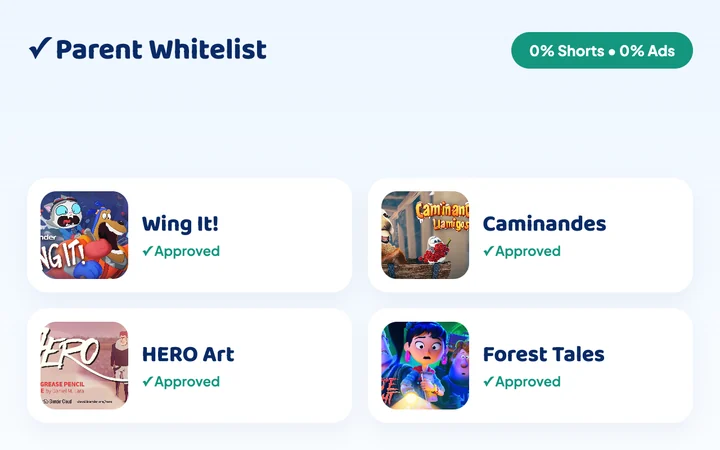
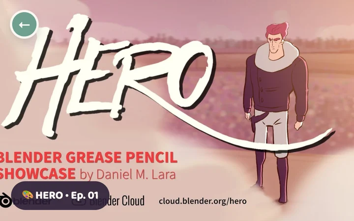
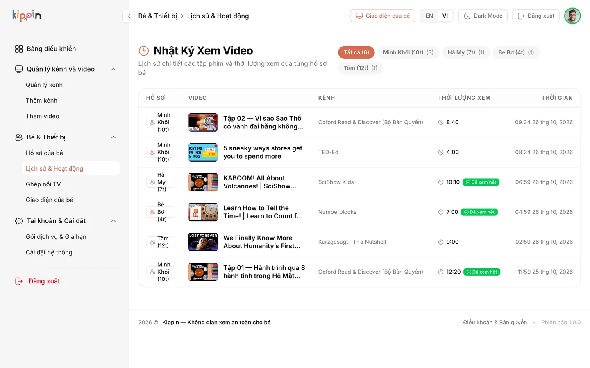
Kippin khác gì YouTube Kids & YouTube thường?
Thay vì thả con vào biển hàng triệu video rồi cố lọc cái xấu (Blacklist), Kippin chỉ mở ra đúng những kênh ba mẹ đã gật đầu (Whitelist).
| Tiêu chí | Kippin | YouTube Kids | YouTube thường |
|---|---|---|---|
| Nguồn video cho bé |
Ba mẹ thêm kênh/playlist YouTube hoặc tự tải lên
|
Thuật toán tự lọc (Blacklist) | Thuật toán tự do đẩy xu hướng |
| Video ngắn (Shorts ≤ 60s) |
Chặn cứng 100%
|
Vẫn xuất hiện Shorts | Lướt vô tận dễ gây nghiện |
| Quảng cáo & Link ngoài |
Không quảng cáo, khóa sạch link ngoài
|
Có quảng cáo xen kẽ | Nhiều quảng cáo & bình luận mở |
| Xem theo Series của kênh |
Tự chuyển tập tiếp theo trong cùng bộ
|
Gợi ý trộn lẫn sang kênh khác | Tự nhảy sang video ngẫu nhiên |
| Kết nối Smart TV |
Nhập mã 6 số, không cần login Google
|
Phải đăng nhập tài khoản Google | Dùng chung tài khoản người lớn |
100% tập trung vào sự bình yên của trẻ nhỏ
Không quảng cáo ẩn, không bán dữ liệu hành vi, không thuật toán câu kéo thời gian xem của con.
Câu hỏi thường gặp của ba mẹ
Ba mẹ thêm video cho con bằng cách nào?
Trong Góc Ba Mẹ, bạn chỉ cần dán đường dẫn kênh hoặc playlist từ YouTube (ví dụ: kênh kể chuyện, tiếng Anh, học vẽ, khám phá khoa học) hoặc tự tải video riêng của gia đình lên. Ngay lập tức, video sẽ xuất hiện gọn gàng trên kệ phim của bé.
Con có thể tự tìm kiếm sang kênh lạ ngoài danh sách không?
Hoàn toàn không. Giao diện của bé không có ô tìm kiếm mở ra ngoài Internet và không hiển thị video gợi ý từ các kênh chưa được ba mẹ thêm vào Whitelist.
Làm sao để mở Kippin trên TV phòng khách?
Kippin có ứng dụng dành riêng cho Android TV và Google TV (Sony, TCL, Xiaomi, Casper, Chromecast with Google TV). Khi mở ứng dụng trên TV, màn hình hiện mã 6 ký tự — ba mẹ nhập mã này trên điện thoại là kết nối xong, không cần gõ mật khẩu Google lên TV.
Nhà có hai bé ở độ tuổi khác nhau thì dùng chung được không?
Được ngay trong cùng một tài khoản gia đình. Ba mẹ có thể tạo hồ sơ riêng với nhân vật đại diện cho từng bé và gán danh sách kênh phù hợp đúng độ tuổi của mỗi con.
Vì sao Kippin chặn toàn bộ video ngắn dưới 60 giây (Shorts)?
Nhịp cắt cảnh dồn dập dưới 60 giây khiến não trẻ bị kích thích liên tục, dễ cáu gắt khi tắt màn hình và giảm sự kiên nhẫn với sách vở. Kippin tự động lọc bỏ mọi clip ngắn ≤ 60 giây để con chỉ xem các câu chuyện và bài học có đầu có cuối.
Bắt đầu tạo góc xem lành mạnh cho con ngay hôm nay
Tạo hồ sơ riêng cho bé, duyệt những kênh con yêu thích và kết nối lên Smart TV phòng khách chỉ trong 2 phút.